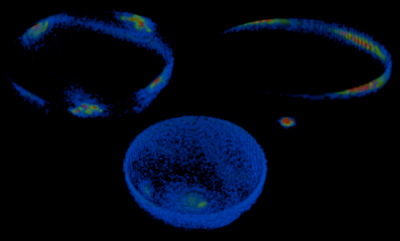

[schwehr.org]

Density
Tools for working with SimVoleon vol format voxel data
By Kurt Schwehr
This project is a set of tools that I am using for my PhD thesis on
comparing magnetic eigen parameters of sediments. That being said,
other that the statistical bootstrap/error modeling code, the rest of
the code is applicable to just about any volumetric project.
I tend to think of the vol data structure as a 3D histogram.
For each XYZ point, that adds to the count in any one cell. Remember
that histograms have all kinds of sampling theory problems, so use
volume data with care.
Docs: Doxygen documentation or click on the programs below for a man page.
The programs:
- render - Offscreen rendering of waypoints to movie frames
- s_bootstrap - Sigma based resampling of data points.
- simpleview - Coin/Voleon OpenInventor viewer (like ivview).
- xyzdensity - Produce a vol file from xyz dotcloud.
- xyz_iv - Generate geometry for points and lines.
- xyzvol_cmp - Compare xyz points to a volume. What's up with the voxel for this point.
- vol2vol - Covert between 8, 16, and 32 bit volumes. Voleon can only render 8 bit, but we want to work with 16 and 32 bit volumes.
- volhdr_edit - Tweak the vol header, but not the data. Mostly to change the scale values.
- volinfo - Tell all about a vol file.
- vol_iv - Make an OpenInventor file wrapper for a vol file. Uses a cmap.
- volmakecmap - Generate color maps from GMT like color pallet table (cpt) files.
SEE ALSO:
These are the main tools I use for development of density.
This serves as a quick way to get to the documentation when working
with density
[SIMVoleon]
[Coin]
[SoQt]
[gcc/g++]
[bash]
[GNU Make]
[gengetopts]
[Doxygen]
[help2man]
[man2html]
[cvs]
[pmag]
[acoc]
[fink]
[emacs]
[gdb]
[gnuplot]
[python]
[gsl]
Thanks to Ian Macdonald for adding an environment variable option to acoc!